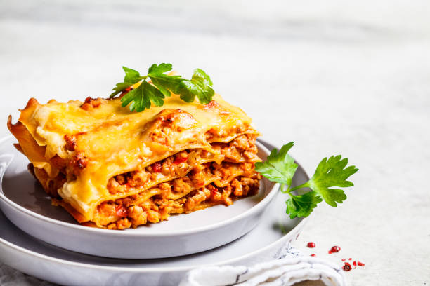

lma9adir
- 1 (16 ounce) package lasagna noodles
- 4 cups ricotta cheese
- 4 eggs
- ¼ cup grated Parmesan cheese
- salt and pepper to taste
- 1 teaspoon olive oil
- 3 cloves garlic, minced
- 1 (32 ounce) jar spaghetti sauce
- 1 teaspoon Italian seasoning
- 2 cups shredded mozzarella cheese
kifach ntaybo
- Preheat the oven to 350 degrees F (175 degrees C).
- Bring a large pot of lightly salted water to a boil.
Add lasagna noodles and cook for 8 to 10 minutes or
until al dente; drain and lay noodles flat on foil to cool.
- Mix ricotta, eggs, Parmesan cheese, salt, and pepper together
in a bowl; mix well.
- Heat oil in a medium saucepan over medium heat; add garlic and
sauté 2 minutes. Stir in spaghetti sauce and Italian seasoning
until warmed through, stirring occasionally, 2 to 5 minutes
- Spread 1/2 cup of sauce on the bottom of a 9x13-inch baking dish.
Cover with a layer of noodles. Spread 1/2 of the ricotta mixture
over noodles; top with another layer of noodles. Pour 1 1/2 cups
of sauce over noodles and spread the remaining ricotta over the
sauce. Top with remaining noodles and sauce; sprinkle with
remaining mozzarella. Cover with a greased sheet of foil.
- Bake in the preheated oven until cheese is melted and bubbly,
about 45 minutes.